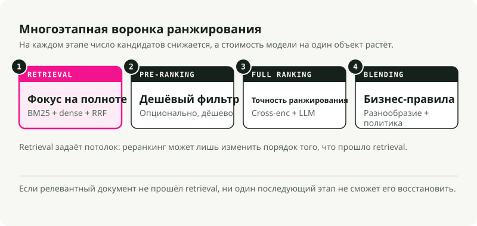
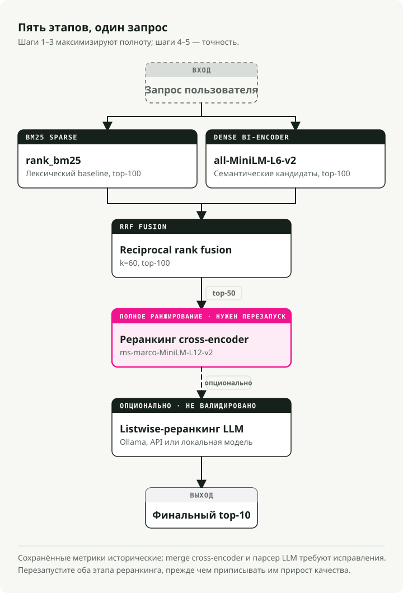
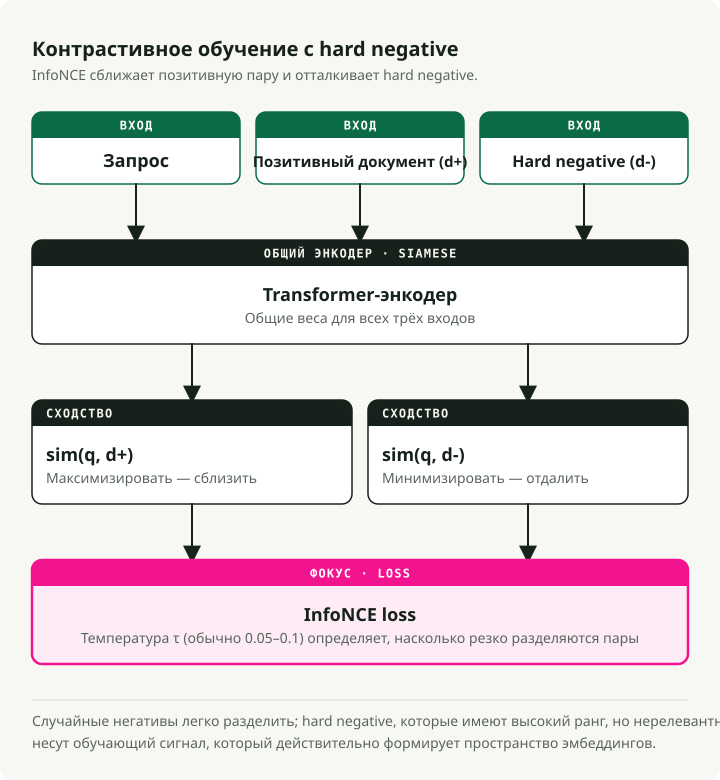
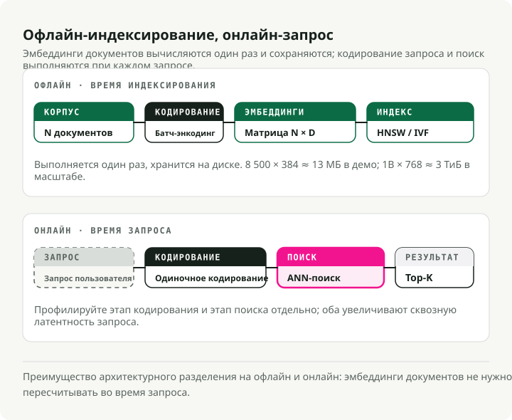
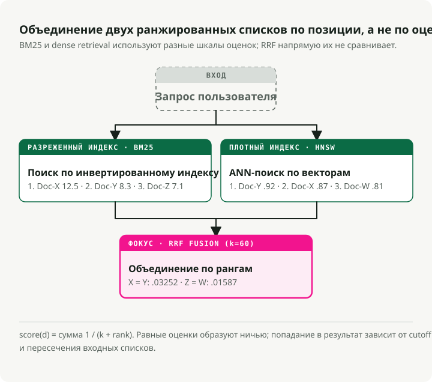
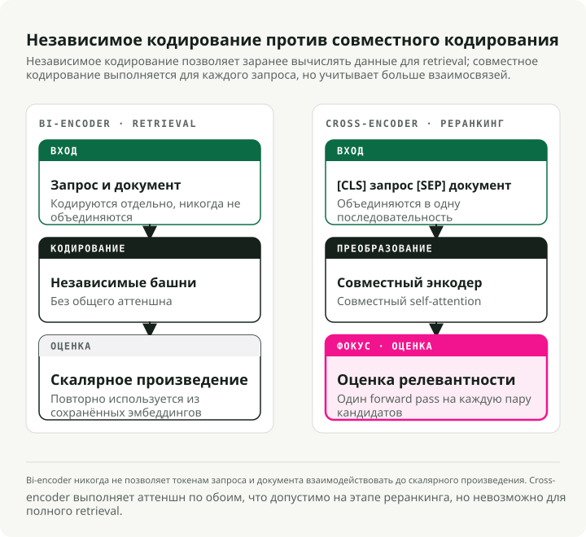
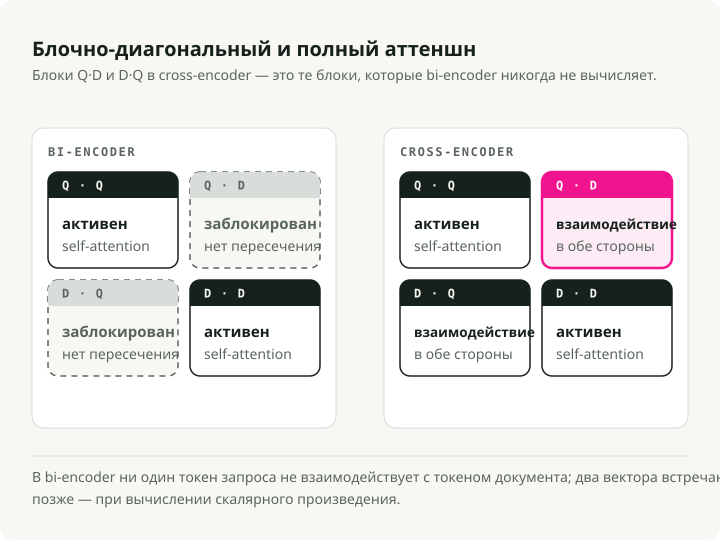
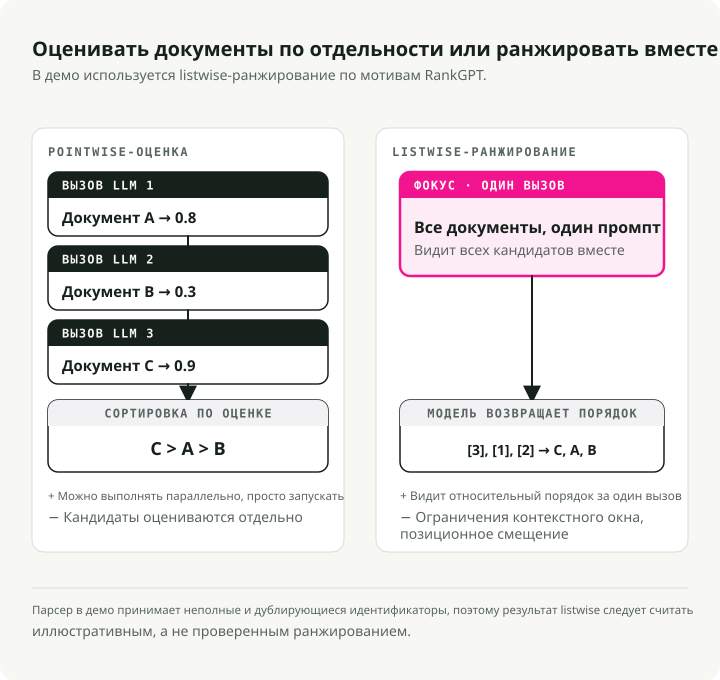
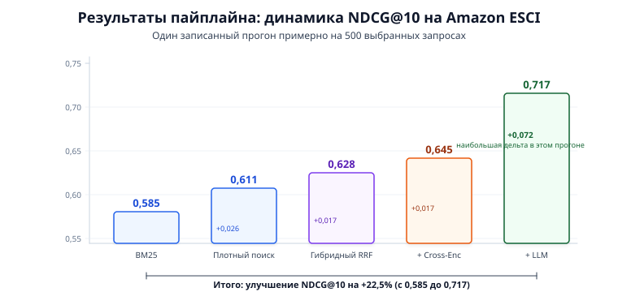
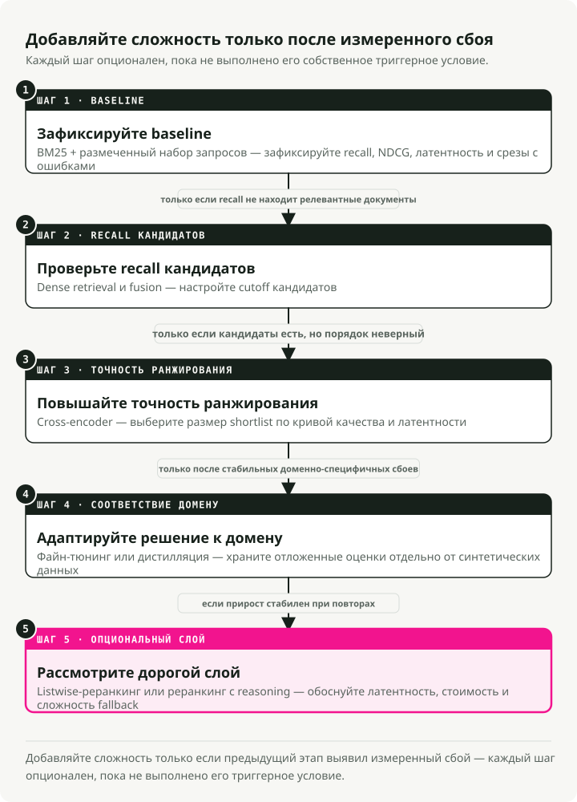

Автоматический перевод
Эта статья была автоматически переведена с оригинальной английской версии.
Стек ранжирования поиска в 2026: BM25, эмбеддинги, cross-encoder'ы и LLM-реранжирование
Поиск уже давно перестал быть задачей сопоставления строк. Когда пользователь вводит "wireless headphones" в поиске по товарам, он ожидает увидеть не просто позиции, содержащие эти два слова. Он хочет лучший результат с учетом семантической релевантности, качества товара, пользовательских предпочтений и доступности. Разрыв между тем, что возвращает BM25, и тем, что реально нужно пользователям, изменил подход к построению поисковых систем.
В этом посте разбирается современный стек ранжирования поиска: многостадийный пайплайн, сочетающий sparse retrieval на BM25, плотные семантические эмбеддинги, reciprocal rank fusion, cross-encoder-реранжирование и LLM listwise ranking. Я собрал рабочее демо, которое сравнивает все стадии на датасете товарного поиска Amazon ESCI, так что вклад каждого слоя виден в реальных метриках.
TL;DR: Многостадийный гибридный пайплайн — практический дефолт для продакшена. Запускайте BM25 и dense retrieval параллельно, объединяйте их через Reciprocal Rank Fusion, реранжируйте выживших cross-encoder'ом и отдавайте финальный слой точности LLM. На бенчмарке Amazon ESCI это дает улучшение NDCG@10 на 22.5% по сравнению с одним BM25 (0.585 → 0.717). Наибольший одиночный прирост дает LLM reranker (+0.072).
Как мы к этому пришли
Ранжирование поиска прошло через три условные фазы, и каждая исправляла конкретное ограничение предыдущей. Современный стек понятен только если видеть весь этот путь.
BM25 и лексический retrieval
В течение десятилетий BM25 был стандартом по умолчанию. Это вероятностная модель, которая оценивает документы по частоте терминов запроса в документе с нормализацией по длине документа и обратной частоте документа (IDF).
BM25 отлично работает на точном совпадении ключевых слов. Поиск по конкретному коду ошибки, SKU товара или HTTP status code работает, потому что системе нужно лишь буквальное пересечение токенов. Ограничение здесь — проблема vocabulary mismatch: запрос "cheap laptop" пропускает документы про "budget notebook computer", потому что слова не совпадают. У BM25 нет представления о семантическом намерении.
При этом BM25 остается сильным базовым уровнем. Он набирает 0.429 среднего nDCG@10 на бенчмарке BEIR из 18 датасетов и до сих пор превосходит некоторые neural-модели на задачах argumentative retrieval, например Touche-2020.
Dense retrieval и эмбеддинги
BERT и Transformer принесли dense retrieval. Вместо сопоставления ключевых слов и запросы, и документы отображаются в общее высокоразмерное векторное пространство (обычно 768 или 1024 измерения). Релевантность становится cosine similarity между двумя векторами.
Архитектура bi-encoder (или "two-tower") обрабатывает запрос и документ независимо через отдельные encoder towers, выдавая эмбеддинги фиксированной длины. Векторы документов можно заранее вычислить и проиндексировать офлайн, а затем быстро извлекать через алгоритмы Approximate Nearest Neighbor (ANN). Теперь "cheap laptop" и "budget notebook" оказываются рядом в векторном пространстве.
Под капотом bi-encoder'ы используют Siamese architecture (Sentence-BERT, Reimers & Gurevych, EMNLP 2019): обе башни разделяют одни и те же веса Transformer'а. Каждая башня обрабатывает свой входной текст, затем усредняет скрытые состояния токенов в один вектор фиксированной длины (часто 384 или 768 измерений). Совместное использование весов помещает запросы и документы в одно и то же семантическое пространство, и именно это делает cosine similarity осмысленной.
Такие модели обучаются через contrastive learning, обычно с функцией потерь InfoNCE. Имея батч пар (query, positive_document), цель — максимизировать sim(query, positive_doc) и минимизировать sim(query, negative_docs). Негативы берутся из позитивных документов других запросов в том же батче (in-batch negatives). Параметр температуры \(\\tau\) управляет резкостью распределения: более низкие значения заставляют модель жестче различать позитивы и негативы.
Самый сильный рычаг для качества bi-encoder'а — качество обучающих данных. Модели стартуют с пар (query, positive_document) из датасетов вроде MS MARCO, а затем дополняются hard negatives — документами, которые текущая модель ранжирует высоко, но которые на самом деле нерелевантны. Случайные негативы слишком просты и ничего не дают для обучения. Hard negatives заставляют модель учить тонкие различия. Фреймворк SimANS (Zhou et al., EMNLP 2022) формализует это: исключать легкие негативы (слишком низкий ранг) и потенциальные false negatives (слишком высокий ранг), обучаясь на "сложной середине".
Цена за это — bottleneck представления. Bi-encoder'ы сжимают всю семантическую информацию в один вектор фиксированного размера, поэтому часто пропускают тонкие взаимодействия между конкретными терминами запроса и конкретным содержимым документа.
Cross-encoder'ы и LLM
Cross-encoder'ы (Nogueira & Cho, 2019) подают запрос и документ в Transformer совместно как конкатенированную последовательность ([CLS] Query [SEP] Document), так что каждый токен запроса может attend'иться к каждому токену документа через полный self-attention. Это глубокое взаимодействие улавливает нюансы, которые независимое кодирование теряет.
LLM reranking идет дальше. Большая языковая модель выступает как zero-shot listwise ranker — фактически как человек-эксперт, который может рассуждать, почему один документ лучше другого. RankGPT (Sun et al., EMNLP 2023 Outstanding Paper) показал, что GPT-4 в роли zero-shot listwise reranker сопоставим или превосходит supervised methods.
Точность высокая. Стоимость тоже. Предварительно вычислить оценки нельзя, а inference в 100 раз медленнее, чем retrieval через bi-encoder. Именно эта цена и диктует архитектурный паттерн современного поиска: многостадийную воронку.
Многостадийная воронка
Прогонять дорогой cross-encoder или LLM по миллионам документов нереалистично, поэтому современные поисковые стеки используют воронку. На каждой стадии пул кандидатов уменьшается, а сложность модели растет.
Одностадийный поиск либо слишком медленный (сложные модели на всем), либо слишком неточный (простые модели везде). Воронка дает компромисс, и это стандартная продакшен-схема в больших системах.

| Stage | Candidate Pool | Primary Objective | Model Complexity | Latency Budget |
|---|---|---|---|---|
| Retrieval | 10^9 - 10^12 | Maximum Recall | Low (BM25, Bi-Encoders) | < 50ms |
| Pre-Ranking | 10^4 - 10^5 | Efficient Filtering | Medium (Two-Tower, GBDT) | < 100ms |
| Full Ranking | 10^2 - 10^3 | Maximum Precision | High (Cross-Encoders, LLMs) | < 500ms |
| Blending | 10^1 - 10^2 | Diversity and Safety | Rules and Multi-Objective | < 20ms |
Retrieval задает потолок, а reranking оптимизирует внутри него. Если релевантный документ не пережил retrieval, ни одна downstream-модель уже не сможет его вернуть.
Демо: пятистадийный пайплайн
Чтобы сделать это конкретным, я собрал демо search-ranking-stack, которое запускает пятистадийный пайплайн на бенчмарке товарного поиска Amazon ESCI. Каждая стадия измеряется отдельно, так что видно, откуда именно приходят улучшения.

Пайплайн:
- BM25 Sparse Retrieval — лексический baseline (rank_bm25)
- Dense Bi-Encoder Retrieval — семантический поиск (all-MiniLM-L6-v2)
- Hybrid RRF Fusion — объединяет sparse и dense результаты
- Cross-Encoder Reranking — тонкая оценка релевантности (ms-marco-MiniLM-L-12-v2)
- LLM Listwise Reranking — финальное ранжирование с рассуждением (Ollama / Claude / local)
Шаги 1--3 — это стадия retrieval воронки (максимизация recall); шаги 4--5 — стадия full ranking (максимизация precision). В демо пропущены pre-ranking и blending. При ~8,500 документах можно позволить себе отправлять все гибридные результаты сразу на reranking.
Быстрый старт
git clone https://github.com/slavadubrov/search-ranking-stack.git
cd search-ranking-stack
uv sync
# Download and sample ESCI dataset (~2.5GB download, ~5MB sample)
uv run download-data
# Run the full pipeline (without LLM reranking)
uv run run-all
# Run with LLM reranking via Ollama
uv run run-all --llm-mode ollama
Датасет: Amazon ESCI
Демо использует Amazon Shopping Queries Dataset (ESCI) из KDD Cup 2022 — реальный бенчмарк товарного поиска с четырехуровневыми метками graded relevance:
| Label | Gain | Meaning | Example (Query: "wireless headphones") |
|---|---|---|---|
| Exact (E) | 3 | Satisfies all query requirements | Sony WH-1000XM5 Wireless Headphones |
| Substitute (S) | 2 | Functional alternative | Wired headphones with Bluetooth adapter |
| Complement (C) | 1 | Related useful item | Headphone carrying case |
| Irrelevant (I) | 0 | No meaningful relationship | USB charging cable |
Graded relevance важна, потому что позволяет использовать NDCG (Normalized Discounted Cumulative Gain), который различает "идеальный" рейтинг и "просто приемлемый". Бинарные метрики считают оба варианта одинаково релевантными и не различают разные уровни релевантности в одной и той же позиции.
Я выбрал ~500 "сложных" запросов (флаг small_version в ESCI), ~8,500 товаров и ~12,000 оценок. Достаточно мало, чтобы прогонять на ноутбуке за минуты, и достаточно много, чтобы получить статистически значимые результаты.
Retrieval: гибридный поиск
Задача retrieval-слоя — максимизировать recall: забросить максимально широкую сеть, чтобы ничего релевантного не проскользнуло мимо.
BM25: лексический baseline
BM25 оценивает документы по пересечению терминов с запросом с учетом насыщения term frequency и нормализации длины документа:
Где \(\\text{IDF}(t)\) — обратная частота документа для термина \(t\), \(tf(t,d)\) — частота термина в документе \(d\), \(|d|\) — длина документа, а \(\\text{avgdl}\) — средняя длина документа по корпусу. Важны два параметра: \(k_1\) (обычно 1.2--2.0) управляет насыщением TF — насколько быстро повторяющиеся термины перестают добавлять ценность — а \(b\) (обычно 0.75) управляет нормализацией по длине документа.
Реализация короткая. Простая токенизация по пробелам с rank_bm25:
# src/search_ranking_stack/stages/s01_bm25.py
from rank_bm25 import BM25Okapi
def run_bm25(data: ESCIData, top_k: int = 100):
doc_ids = list(data.corpus.keys())
tokenized_corpus = [text.lower().split() for text in data.corpus.values()]
bm25 = BM25Okapi(tokenized_corpus)
results = {}
for query_id, query_text in data.queries.items():
scores = bm25.get_scores(query_text.lower().split())
top_indices = np.argsort(scores)[::-1][:top_k]
results[query_id] = {doc_ids[idx]: float(scores[idx]) for idx in top_indices}
return results
BM25 дает Recall@100 = 0.741 — 74% релевантных товаров попадают куда-то в топ-100. Неплохо для чисто лексического метода, но 26% релевантных объектов остаются невидимыми для всех downstream-стадий.
Dense Bi-Encoder: семантический retrieval
Bi-encoder независимо отображает запросы и документы в общее пространство эмбеддингов:
# src/search_ranking_stack/stages/s02_dense.py
from sentence_transformers import SentenceTransformer
model = SentenceTransformer("sentence-transformers/all-MiniLM-L6-v2")
# Encode corpus once, cache to disk
corpus_embeddings = model.encode(
doc_texts,
batch_size=128,
normalize_embeddings=True, # Cosine sim = dot product
convert_to_numpy=True,
)
# At query time: encode query, compute dot product
query_embeddings = model.encode(query_texts, normalize_embeddings=True)
similarity_matrix = np.dot(query_embeddings, corpus_embeddings.T)
При нормализованных эмбеддингах cosine similarity сводится к dot product — одно матричное умножение позволяет извлечь результаты сразу для всех запросов. Модель all-MiniLM-L6-v2 на 22M параметров спокойно работает на CPU и поднимает Recall@100 до 0.825, что на 11% лучше BM25.
Как bi-encoder'ы учатся хорошим представлениям
Обучение bi-encoder'ов обычно идет в две фазы. Сначала модель pre-train'ится на датасетах Natural Language Inference (NLI) и Semantic Textual Similarity (STS), которые учат общему семантическому пониманию — модель усваивает, что "a cat sits on a mat" и "a feline rests on a rug" должны иметь похожие эмбеддинги. Затем она fine-tune'ится на retrieval-специфичных данных вроде MS MARCO, где учится тому, что поисковый запрос и релевантный passage должны быть ближе друг к другу, чем запрос и нерелевантные passage'и.
Критический ингредиент второй фазы — hard negative mining. Случайные негативы (например, документ про готовку в паре с запросом про наушники) тривиально различимы — модель на них ничему не учится. Вместо этого используется сама текущая модель для поиска документов, которые она ранжирует высоко, но которые на самом деле не релевантны.
Подход SimANS (Simple Ambiguous Negatives Sampling) формализует это: ранжируйте все документы текущим bi-encoder'ом, затем исключайте легкие негативы (слишком низкий ранг — модель и так их различает) и потенциальные false negatives (слишком высокий ранг — они могут быть релевантными, но неразмеченными). Максимальный обучающий сигнал дает именно "сложная середина".
# What a training triplet looks like after hard negative mining
training_triplet = {
"query": "wireless noise canceling headphones",
"positive": "Sony WH-1000XM5 Wireless Noise Cancelling Headphones",
"negative": "Sony headphone replacement ear pads", # Hard negative: same brand, related product, but wrong intent
}
# The bi-encoder must learn that "ear pads" is NOT what the user wants,
# even though it shares many tokens with the positive document.
Контрастивная функция потерь (InfoNCE) связывает это воедино. Для каждого запроса \(q\) с позитивным документом \(d^+\) и набором негативных документов \(\\{d^-_1, \\ldots, d^-_n\\}\):
Где \(\\text{sim}(q, d)\) — cosine similarity между эмбеддингами запроса и документа, а \(\\tau\) — параметр температуры (обычно 0.05--0.1), который контролирует резкость распределения: меньшие значения делают loss более чувствительным к hard negatives. По сути это softmax cross-entropy: поднимать similarity позитивной пары относительно всех негативов. Когда \(\\tau\) мал, даже небольшие различия в similarity дают большие градиенты, что заставляет модель различать объекты более тонко.

Сервинг bi-encoder-эмбеддингов в масштабе
Архитектурное преимущество bi-encoder'ов — чистое offline/online split. Все эмбеддинги документов вычисляются один раз на этапе индексации и сохраняются в vector index. Во время запроса только сам query требует одного forward pass через encoder (~5ms), после чего выполняется ANN search по заранее вычисленным эмбеддингам (~10ms). Именно эта асимметрия и делает dense retrieval практичным в масштабе.
В демо математика скромная: 8,500 документов \(\\times\) 384 измерения \(\\times\) 4 байта на float = ~13 MB эмбеддингов. В продакшен-масштабе цифры уже другие: 1 миллиард документов с эмбеддингами размерности 768 требует ~3 TiB хранилища. Здесь и появляются quantization (сжатие 32-bit float в 8-bit integer), product quantization (разложение векторов на подпространства) и SSD-backed индексы вроде DiskANN. Алгоритмы индексации разбираются в разделе Vector Indexing: HNSW vs. IVF.

Почему гибрид: у BM25 и dense retrieval дополняющие друг друга провалы
Ни один из методов по отдельности не достаточен. BM25 выигрывает на именах собственных, точных SKU товаров и кодах ошибок — "iPhone 15 Pro Max 256GB" требует точного совпадения токенов. Dense retrieval выигрывает на vocabulary mismatch — сопоставление "cheap laptop" и "budget notebook computer" требует семантического понимания.
Стандартное решение — hybrid search: запускать оба retrieval-метода параллельно и затем объединять результаты.
Reciprocal Rank Fusion (RRF)
Проблема hybrid search в том, что BM25 и dense retrieval выдают scores в совершенно разных шкалах. У BM25 оценка не ограничена сверху (0 до 100+), а cosine similarity ограничена интервалом от -1 до 1. Простая линейная комбинация требует постоянного тюнинга, чтобы не ломаться.

Reciprocal Rank Fusion (Cormack et al., 2009) полностью отбрасывает сырые scores и использует только позицию в ранге:
Где \(k\) — smoothing-константа (обычно 60), смягчающая доминирование выбросов. RRF вознаграждает объекты, которые стабильно находятся в верхней части ранжирования в обоих методах, даже если одна система оценивает их намного выше другой. При переходе к rank-based схеме проблема несовпадения шкал исчезает.
Реализация:
# src/search_ranking_stack/stages/s03_hybrid_rrf.py
def reciprocal_rank_fusion(ranked_lists, k=60, top_k=100):
fused_results = {}
for query_id in all_query_ids:
rrf_scores = defaultdict(float)
for results in ranked_lists:
sorted_docs = sorted(results[query_id].items(),
key=lambda x: x[1], reverse=True)
for rank, (doc_id, _score) in enumerate(sorted_docs, start=1):
rrf_scores[doc_id] += 1.0 / (k + rank)
sorted_rrf = sorted(rrf_scores.items(),
key=lambda x: x[1], reverse=True)[:top_k]
fused_results[query_id] = dict(sorted_rrf)
return fused_results
Hybrid RRF дает Recall@100 = 0.842 и NDCG@10 = 0.628 — лучше, чем у BM25 (0.585) и Dense (0.611) по отдельности. Документу достаточно хорошо ранжироваться в одном из методов, чтобы пережить fusion.
Cross-encoder reranking
Когда у вас по 100 гибридных кандидатов на запрос, можно позволить себе более дорогую модель. Cross-encoder обрабатывает запрос и документ вместе через один Transformer, с полным cross-attention между всеми токенами.

Почему cross-attention важен
Ключевое отличие — в матрице attention. В bi-encoder attention block-diagonal: токены запроса attend'ятся только к токенам запроса, а токены документа — только к токенам документа. Эти два представления никогда не встречаются на уровне токенов — они пересекаются только в конце через dot product. Cross-encoder вычисляет полную матрицу attention, где каждый токен запроса attend'ится к каждому токену документа и наоборот. Именно этот cross-attention и открывает глубокое взаимодействие на уровне токенов.

В bi-encoder запрос "apple" каждый раз дает один и тот же эмбеддинг. Он кодируется независимо, до просмотра какого-либо документа. Cross-encoder видит запрос и документ одновременно, поэтому может разрешать неоднозначность в контексте. Преимущества выходят далеко за пределы полисемии:
- Negation: запрос "headphones that are not wireless" — bi-encoder-эмбеддинги для "not wireless" почти идентичны "wireless", потому что отрицание слабо меняет mean-pooled вектор. Cross-encoder видит, как токен "not" напрямую attend'ится к "wireless", и правильно поднимает выше проводные наушники.
- Qualification: запрос "laptop under \\(500" — ценовое ограничение влияет на релевантность. Cross-encoder может attend'иться от "\\\)500" к цене в описании товара и проверить, соблюдается ли ограничение.
Вход cross-encoder'а форматируется как [CLS] query tokens [SEP] document tokens [SEP]. [CLS] — это classification token, чье финальное hidden state подается в linear head для получения единого score релевантности. Segment embeddings различают токены запроса и документа, а [SEP] отмечает границу между сегментами.
Как обучаются cross-encoder'ы
Обучение cross-encoder'ов концептуально проще, чем у bi-encoder'ов. Модель получает тройки (query, document, relevance_label) и учится предсказывать метку через обычное supervised learning — без contrastive loss.
# Cross-encoder training data format
training_example = {
"query": "wireless headphones",
"document": "Sony WH-1000XM5 Wireless Headphones",
"label": 1.0, # Relevant
}
# Forward pass: [CLS] hidden state → Linear layer → sigmoid → score
# Loss: binary cross-entropy between predicted score and label
Classification head находится поверх финального hidden state токена [CLS]: один linear layer отображает hidden dimension в скаляр, после чего идет sigmoid. Для бинарных меток релевантности подходит binary cross-entropy loss; для градуированных меток вроде четырехуровневой шкалы ESCI лучше работает MSE loss, потому что он сохраняет порядковое отношение между уровнями.
Hard negative mining еще важнее для cross-encoder'ов, чем для bi-encoder'ов. Cross-encoder'ы дороги в обучении — каждый тренировочный пример требует полного forward pass по конкатенированной последовательности — поэтому тратить вычисления на тривиально легкие негативы нельзя. Практический рецепт: используйте bi-encoder для retrieval top-K кандидатов по каждому обучающему запросу, а затем берите hard negatives из конкретных диапазонов рангов (например, 10–100). Это дает cross-encoder'у примеры, где различить релевантное и нерелевантное можно только через глубокое взаимодействие токенов.
# src/search_ranking_stack/stages/s04_cross_encoder.py
from sentence_transformers import CrossEncoder
model = CrossEncoder("cross-encoder/ms-marco-MiniLM-L-12-v2")
def run_cross_encoder(data, hybrid_results, top_k_rerank=50):
for query_id, query_text in data.queries.items():
candidates = list(hybrid_results[query_id].items())[:top_k_rerank]
# Form (query, document) pairs for joint encoding
pairs = []
doc_ids = []
for doc_id, _ in candidates:
doc_text = data.corpus.get(doc_id, "")[:2048]
pairs.append([query_text, doc_text])
doc_ids.append(doc_id)
# Score all pairs with full cross-attention
scores = model.predict(pairs, batch_size=64)
# Rerank by cross-encoder score
scored_docs = sorted(zip(doc_ids, scores),
key=lambda x: x[1], reverse=True)
reranked_results[query_id] = {
doc_id: float(score) for doc_id, score in scored_docs
}
Модель ms-marco-MiniLM-L-12-v2 на 33M параметров в среднем работает около 100ms на запрос на CPU для 50 кандидатов. NDCG@10 поднимается до 0.645 — хороший прирост на +0.017 относительно гибридного retrieval.
Компромисс скорость/качество
Почему бы не использовать cross-encoder'ы везде? Потому что предварительные вычисления невозможны. Эмбеддинги документов в bi-encoder query-independent, поэтому их можно вычислить один раз и сохранить. Выход cross-encoder'а зависит одновременно и от запроса, и от документа. Score релевантности для пары "wireless headphones" и товара Sony возникает из полного cross-attention между этими конкретными токенами. Его нельзя закэшировать или переиспользовать для другого запроса.
Разница в стоимости радикальная. Retrieval через bi-encoder требует 1 forward pass (чтобы закодировать запрос) плюс N dot product'ов по заранее вычисленным эмбеддингам документов — dot product'ы практически бесплатны. Cross-encoder требует N полных Transformer forward pass'ов, каждый из которых обрабатывает конкатенированную последовательность query + document со стоимостью \(O(L^2)\) для суммарной длины последовательности \(L\). Для 50 кандидатов и средней общей длины 128 токенов это 50 отдельных forward pass'ов через 12 Transformer layers. Для 100,000 кандидатов это уже минуты на современной GPU против ~17ms у bi-encoder'а.
Правило, которое подтверждает демо: Recall@100 остается неизменным на уровне 0.842 через обе стадии reranking. Reranking может переставлять результаты, но не добавлять документы. Потолок задается retrieval-слоем.
LLM listwise reranking
Финальная стадия использует LLM для listwise reranking. Вместо того чтобы оценивать каждый документ независимо (pointwise), LLM видит сразу все top-10 результатов и выдает полное ранжирование. Этот подход, вдохновленный RankGPT, позволяет модели сравнивать товары друг с другом — то, чего pointwise-модели делать не могут.

Listwise prompt
Шаблон prompt'а просит LLM учитывать иерархию релевантности ESCI:
# src/search_ranking_stack/stages/s05_llm_rerank.py
def _create_listwise_prompt(query, documents, max_words=200):
n = len(documents)
doc_texts = []
for i, (doc_id, doc_text) in enumerate(documents, start=1):
words = doc_text.split()[:max_words]
doc_texts.append(f"[{i}] {' '.join(words)}")
return (
f"I will provide you with {n} product listings, each indicated by "
f"a numerical identifier [1] to [{n}]. Rank the products based on "
f'their relevance to the search query: "{query}"\n\n'
"Consider:\n"
"- Exact matches should rank highest\n"
"- Substitutes should rank above complements\n"
"- Irrelevant products should rank lowest\n\n"
f"{chr(10).join(doc_texts)}\n\n"
"Output ONLY a comma-separated list of identifiers: [3], [1], [2], ...\n"
"Do not explain your reasoning."
)
Три режима выполнения
Демо поддерживает три backend'а для LLM reranking:
| Mode | Model | How It Runs |
|---|---|---|
ollama |
llama3.2:3b (configurable) |
Local via Ollama API |
api |
claude-haiku-4-5-20251001 |
Anthropic API |
local |
Qwen/Qwen2.5-1.5B-Instruct |
HuggingFace Transformers |
Парсинг и fallback
Выходы LLM недетерминированы, поэтому важны устойчивый парсинг и fallback-path:
def _parse_ranking(output: str, n: int) -> list[int] | None:
"""Parse LLM output to extract ranking order."""
matches = re.findall(r"\[(\d+)\]", output)
if not matches:
return None
positions = [int(m) - 1 for m in matches]
# Pad with remaining positions if LLM returned partial output
if len(positions) < n:
seen = set(positions)
for i in range(n):
if i not in seen:
positions.append(i)
return positions[:n]
Если парсинг полностью проваливается, система возвращается к порядку cross-encoder'а. Любая production-интеграция с LLM должна иметь такой fallback-path — не стоит допускать, чтобы ошибка парсинга опускала результаты ниже качества предыдущей стадии.
Результаты: каждая стадия оправдывает себя
Вот результаты полного пайплайна на ~500 запросах ESCI:

| Stage | NDCG@10 | MRR@10 | Recall@100 | NDCG Delta |
|---|---|---|---|---|
| BM25 | 0.585 | 0.812 | 0.741 | -- |
| Dense Bi-Encoder | 0.611 | 0.808 | 0.825 | +0.026 |
| Hybrid (RRF) | 0.628 | 0.834 | 0.842 | +0.017 |
| + Cross-Encoder | 0.645 | 0.860 | 0.842 | +0.017 |
| + LLM Reranker | 0.717 | 0.901 | 0.842 | +0.072 |
Ключевые наблюдения
Hybrid search лучше любого из методов по отдельности. RRF NDCG (0.628) превосходит и BM25 (0.585), и Dense (0.611). У sparse и dense retrieval дополняющие друг друга режимы отказа, и их комбинация возвращает документы, которые пропустил бы каждый из методов по отдельности.
Recall определяется на стадии retrieval. Recall@100 остается на уровне 0.842 на обеих стадиях reranking. Reranker'ы переставляют, но не добавляют документы. Хотите выше recall — чините retrieval-слой.
LLM reranker дает самый большой одиночный прирост. Прирост +0.072 NDCG@10 при переходе от cross-encoder к LLM reranker — крупнейшее улучшение на одной стадии во всем пайплайне. LLM может рассуждать о товарной релевантности — например, понимать, что "wireless headphone stand" это complement, а не match, — и именно такую дискриминацию статистические модели часто упускают.
Dense побеждает BM25 на этом датасете. В предметной области товарного поиска ESCI сильный vocabulary mismatch (пользователи говорят "cheap laptop", а товары — "budget notebook computer"), и это как раз играет на стороне семантического retrieval.
Evaluation: измеряем то, что важно
В демо используются три взаимодополняющие метрики. Каждая смотрит на ранжирование под своим углом:
NDCG@10 (основная метрика)
Normalized Discounted Cumulative Gain измеряет качество top-10 ранжирования с учетом graded relevance. Она вознаграждает за размещение наиболее релевантных документов выше, с логарифмическим discount:
NDCG — единственная метрика, которая полностью использует четырехуровневую graded relevance в ESCI: система, ставящая Exact match на позицию 1, получает более высокий score, чем та, что ставит туда Substitute. Поэтому это и есть основная метрика общего качества поиска.
MRR@10 (пользовательский опыт)
Mean Reciprocal Rank измеряет, как быстро пользователь находит первый релевантный результат. Если первый релевантный результат на позиции 1, то MRR = 1.0. На позиции 3 reciprocal rank равен 0.333. Метрика отражает "time to satisfaction" — даже при высоком NDCG пользователей сильнее всего волнует первый хороший результат.
Recall@100 (покрытие retrieval)
Recall измеряет, какая доля всех релевантных документов появляется где-либо в top-100. Это метрика-потолок: если релевантный документ не извлечен, ни один reranker это уже не исправит.
Векторная индексация: HNSW vs. IVF
Плотные эмбеддинги становятся полезны в масштабе только при наличии Approximate Nearest Neighbor (ANN) индекса. В демо используется brute-force cosine similarity (на ~8,500 документах это нормально), но production-системам нужны специализированные индексы.
HNSW (Hierarchical Navigable Small World)
HNSW (Malkov & Yashunin, 2016) — частый выбор для production-сред с требованиями к latency ниже 100ms. Он строит многослойный граф, где верхние слои дают "экспресс"-связи для грубой навигации, а нижние — плотные связи для точного уточнения. Ключевые tuning-параметры: M (число связей на узел, обычно 16–64) и efSearch (ширина beam на этапе запроса — используйте не меньше 512 для target recall выше 0.95).
Слабое место HNSW — проблема tombstone'ов: при удалении записей в графе остаются фантомные узлы. Со временем они создают недостижимые области, фактически скрывая часть данных от поиска. Это не теоретическая проблема — даже современные vector database, такие как Qdrant, использующие только HNSW, сообщают о деградации качества поиска после большого числа удалений, из-за чего приходится полностью перестраивать индекс. Если ваш датасет часто обновляется или чистится, закладывайте периодическую переиндексацию или рассматривайте альтернативы на базе IVF.
IVF (Inverted File)
IVF-индексы разбивают векторное пространство на ячейки Вороного с помощью k-means clustering. Во время запроса сканируются только nprobe кластеров, ближайших к центроиду запроса. IVF более экономичен по памяти и устойчивее к динамическим датасетам — удаления чистые, без недостижимых узлов. Время построения в 4x–32x быстрее, чем у HNSW.
Для экстремального масштаба IVF_RaBitQ (Gao & Long, SIGMOD 2024) сжимает floating-point векторы в однобитные представления. В высокоразмерном пространстве знак координаты (+/-) несет достаточно угловой информации для вычисления similarity.
| Feature | HNSW (Graph) | IVF (Cluster) |
|---|---|---|
| Query Speed | Exceptional | Moderate |
| Build Speed | Slow | Fast (4x-32x faster) |
| Memory | High (RAM-bound) | Low |
| Deletions | Problematic (tombstones) | Clean |
| Best For | Static, latency-critical | Dynamic, memory-constrained |
Практическая рекомендация от Uber: они оптимизировали ANN retrieval, уменьшив shard-level search parameter K с 1,200 до 200, и получили снижение latency на 34% и экономию CPU на 17% почти без потерь в recall.
Слой LLM: не только reranking
LLM улучшают не только стадию reranking. Они меняют и остальную часть поискового пайплайна.
Понимание запроса
LLM-driven query expansion и rewriting борются с vocabulary mismatch еще до начала retrieval. Query2doc (Wang et al., EMNLP 2023) генерирует псевдо-документы через few-shot prompting LLM и конкатенирует их с исходными запросами, получая улучшение BM25 на 3–15% на MS MARCO без какого-либо fine-tuning. LLM "достраивает" ту лексику, которой нет в кратком пользовательском запросе.
Практические паттерны: раскрытие аббревиатур, обогащение сущностями, декомпозиция на sub-query для multi-hop reasoning и RAG-Fusion — генерация нескольких вариантов запроса с последующим объединением результатов через RRF.
LLM-as-a-judge для evaluation
Во многих местах LLM уже стали дефолтом для оценки качества поиска. Фреймворк TALEC достигает более 80% корреляции с человеческими оценками, используя domain-specific evaluation criteria. Подход Pinterest тоже стоит прочитать: Llama-3-8B выступает как offline teacher, генерирующий пятиуровневые метки релевантности на миллиардах search impressions, и превосходит multilingual BERT-base по accuracy на 12.5%; затем эти метки дистиллируются в легкие production-модели.
Что делает LLM evaluation надежнее:
- Просите модели объяснять свои оценки (это заметно улучшает согласованность с людьми)
- Используйте панели из разных моделей, чтобы снизить вариативность ("replacing judges with juries")
- Учитывайте central tendency bias в метках, сгенерированных LLM
Дистилляция знаний
Прогонять full LLM на каждый запрос слишком дорого. Решение — distillation:
- Использовать мощную LLM (teacher), чтобы реранжировать тысячи обучающих запросов
- Обучить маленький и быстрый cross-encoder (student, ~100M–200M параметров), чтобы он имитировал распределение ранжирования LLM
- Результат: качество, близкое к LLM, при latency около ~10ms
InRanker дистиллирует MonoT5-3B в модели на 60M и 220M параметров — уменьшение размера в 50 раз при конкурентном качестве. Подход Rank-Without-GPT дает 7B open-source listwise reranker'ы, достигающие 97% эффективности GPT-4 благодаря fine-tuning через QLoRA.
И еще одно замечание по оптимизации затрат от ZeroEntropy: реранжирование 75 кандидатов с отправкой в GPT-4o только top-20 снижает API cost на 72% — с $162K/day до $44K/day при 10 QPS — при сохранении 95% accuracy ответов.
Персонализация: важно, кто именно ищет
Глобальной релевантности хватает только до определенного предела. По запросу "apple" tech-энтузиасту нужно показать iPhone, а пользователю, который до этого читал про кулинарию, — рецепты с яблоками.
Two-tower-модели для персонализации
Распространенная retrieval-архитектура для персонализации использует two-tower embedding model: башня запроса кодирует поисковые запросы плюс профиль пользователя в эмбеддинги; башня item'ов кодирует сами item'ы плюс metadata. Релевантность определяется через dot product similarity, что позволяет оставаться в режиме ANN с latency ниже 100ms.
Airbnb одними из первых внедрили listing embeddings на обучении в стиле Word2Vec по click-сессиям — их каналы Search и Similar Listings вместе дают 99% booking conversions. OmniSearchSage от Pinterest (WWW 2024) совместно обучает единые эмбеддинги query, pin и product, давая >8% improvement по релевантности при 300K requests/second. Uber Two-Tower Embeddings обеспечивают retrieval в Eats Homefeed примерно за 100ms.
Position bias: тихое искажение
Пользователи чаще кликают по результатам выше в списке вне зависимости от истинной релевантности, что создает самоподдерживающийся feedback loop. Самое практичное production-решение (PAL, Guo et al., RecSys 2019): включать позицию как feature при обучении, а на serving выставлять position=1 для всех объектов. Это debias'ит модель без явного моделирования распределения кликов.
Как закрыть domain gap
Типичная ошибка в поисковой стратегии — считать, что модель, обученная на общих веб-данных (например, MS MARCO), будет хорошо работать в специализированной предметной области. Это out-of-domain (OOD) problem.
Генерация синтетических данных
LLM решают проблему нехватки размеченных данных через Generative Pseudo-Labeling (GPL, InPars):
- Возьмите свой доменный корпус документов
- Дайте LLM prompt вида "Generate a search query that this document would answer"
- Используйте синтетические пары (query, document) для fine-tuning retriever'а и reranker'а
Эта техника дала сильные улучшения на доменных задачах, где реальных пользовательских запросов мало. Это практический мост между Level 2 и Level 3 на кривой зрелости.
RMSC: soft tokens для domain adaptation
Стратегия RMSC (Robust Multi-Supervision Combining) вводит soft tokens — доменные токены [S1], [T1] и токены релевантности [H1], [W1], — которые сообщают модели, какой домен она обрабатывает и насколько надежен supervision signal. Обучение с такими токенами сохраняет domain-specific knowledge в token embeddings вместо того, чтобы перезаписывать параметры основного backbone.
Практический путь зрелости
Если вы строите такой стек сегодня, не начинайте с самой сложной архитектуры. Лучше двигаться по такой кривой зрелости:

Level 1 (baseline): Postgres pgvector или Elasticsearch. Гибридный поиск с BM25 + vector retrieval. Без reranker'а.
Level 2 (reranker): добавить cross-encoder (например, bge-reranker-v2-m3 или ms-marco-MiniLM-L-12-v2) для reranking top 50 результатов. Обычно это максимальный ROI при минимальных усилиях. Модель Elastic Rerank (184M параметров, DeBERTa v3) достигает 0.565 среднего nDCG@10 на BEIR — это улучшение на 39% относительно BM25.
Level 3 (fine-tuning): дообучить embedding model и reranker на доменных данных, используя синтетические запросы, сгенерированные LLM (GPL/InPars). На этом уровне domain-specific performance начинает заметно отрываться от generic-моделей.
Level 4 (state of the art): добавить listwise LLM reranking для top 5–10 результатов и внедрить сигналы персонализации. Поэкспериментировать с reasoning-based reranker'ами вроде Rank1, который генерирует явные цепочки рассуждений перед вынесением суждений о релевантности.
Для большинства команд sweet spot — это Level 2. Добавление cross-encoder reranker'а к уже существующему hybrid search setup может резко поднять precision без архитектурной перестройки.
Передний край: reasoning reranker'ы и agentic search
Два паттерна определяют то, куда движется поиск.
Reasoning-based reranker'ы
Rank1 обучает модели reranking'а генерировать явные reasoning chains перед тем, как принимать решение о релевантности, вдохновляясь DeepSeek-R1 и OpenAI o1. Он дистиллируется из 600,000+ примеров reasoning traces и достигает state-of-the-art на reasoning-бенчмарке BRIGHT — иногда с 2x improvement по сравнению с reranker'ами того же размера. Rank1-0.5B показывает качество, сравнимое с RankLLaMA-13B, будучи при этом в 25 раз меньше.
Практический вывод: запросы с высокой долей рассуждения (юридический поиск, научная литература, сложный товарный поиск) сильно выигрывают от масштабирования test-time compute в reranker'ах.
Agentic search
Search-o1 (EMNLP 2025) позволяет reasoning-моделям (в частности QwQ-32B) автономно генерировать поисковые запросы, когда в процессе рассуждения они сталкиваются с неопределенным знанием, и дает среднее улучшение exact match на 23.2% относительно стандартного RAG на multi-hop QA-бенчмарках. Поиск все больше становится инструментом, который AI-агенты вызывают динамически, а не отдельным продуктом.
Ключевые выводы
-
Hybrid search — новый стандарт. Эмпирические данные по бенчмаркам и production-системам устойчиво это подтверждают, и все крупные vector database теперь поддерживают его нативно. Демо показывает, что RRF NDCG (0.628) превосходит и BM25 (0.585), и Dense (0.611).
-
Retrieval задает потолок, reranking оптимизирует внутри него. Recall@100 остается на уровне 0.842 на обеих стадиях reranking. Сначала инвестируйте в качество retrieval.
-
Добавление cross-encoder'а — самое выгодное одиночное изменение для большинства команд. Даже небольшой cross-encoder, реранжирующий 50 документов, дает реальный прирост NDCG. Начинайте с этого.
-
LLM listwise reranking дает самый большой одиночный скачок качества (+0.072 NDCG@10 в демо), но ценой latency и вычислений. Используйте его выборочно, только на финальном top-10.
-
Knowledge distillation делает reranking уровня LLM практичным. Возможности больших моделей сжимаются до deployable-размеров за месяцы. Модель на 7B может достигать 97% эффективности GPT-4 в reranking.
-
Качество в продакшене определяется стеком, а не одной моделью. Оптимизируйте весь пайплайн — взаимодействие между retrieval, fusion и reranking, — а не только отдельный компонент.
Полный код пайплайна находится в github.com/slavadubrov/search-ranking-stack. Клонируйте, запускайте, подставляйте другие модели и параметры и смотрите на метрики сами.
References
Papers
- Reciprocal Rank Fusion — Cormack et al., 2009
- RankGPT: LLMs as Zero-Shot Listwise Rerankers — Sun et al., EMNLP 2023 Outstanding Paper
- Rank1: Reasoning-Based Reranking — Weller et al., COLM 2025
- SCaLR: Self-Calibrated Listwise Reranking — Фреймворк self-calibrating listwise reranking
- GCCP: Global-Consistent Comparative Pointwise — Решение проблемы калибровки в pointwise LLM ranking
- Rank-DistiLLM: Knowledge Distillation for Reranking — Schlatt et al., ECIR 2025
- Query2doc: LLM Query Expansion — Wang et al., EMNLP 2023
- GPL: Generative Pseudo Labeling — Domain adaptation для dense retrieval
- InRanker: Distilled Reranker — Уменьшение размера в 50 раз при конкурентном качестве
- Search-o1: Agentic Retrieval — EMNLP 2025
- TALEC: LLM-as-a-Judge for Search — Evaluation framework
- RMSC: Soft Tokens for Domain Adaptation — Multi-supervision combining
- BEIR Benchmark — Thakur et al., NeurIPS 2021
- Sentence-BERT — Reimers & Gurevych, EMNLP 2019
- InfoNCE / CPC — van den Oord et al., 2018
- SimANS: Hard Negative Sampling — Zhou et al., EMNLP 2022
- Passage Reranking with BERT — Nogueira & Cho, 2019
- HNSW — Malkov & Yashunin, 2016
- DiskANN — Subramanya et al., NeurIPS 2019
- RaBitQ — Gao & Long, SIGMOD 2024
- Replacing Judges with Juries — Verga et al., 2024
- RAG-Fusion — Rackauckas, 2024
- InPars — Bonifacio et al., SIGIR 2022
- BRIGHT Benchmark — Su et al., ICLR 2025
- Rank-without-GPT — Zhang et al., ECIR 2025
- Pinterest LLM Search Relevance — Wang et al., 2024
- OmniSearchSage — Agarwal et al., WWW 2024
- PAL: Position-bias Aware Learning — Guo et al., RecSys 2019
Datasets and Benchmarks
- Amazon ESCI: Shopping Queries Dataset — KDD Cup 2022
- BEIR: Benchmarking IR — Гетерогенный бенчмарк для zero-shot evaluation
- MTEB: Massive Text Embedding Benchmark — Leaderboard embedding-моделей
- ESCI Paper — Reddy et al., 2022
Models Used in the Demo
- all-MiniLM-L6-v2 — Bi-encoder на 22M параметров
- ms-marco-MiniLM-L-12-v2 — Cross-encoder на 33M параметров
- Sentence-Transformers — Фреймворк neural retrieval models
Tools and Platforms
- rank_bm25 — Реализация BM25 на Python
- pytrec_eval — TREC evaluation toolkit
- Elasticsearch — Гибридный поиск с Retrievers API
- Vespa — Единый движок поиска и рекомендаций
- Weaviate — Vector database с hybrid search
- Qdrant — Vector database с multi-stage queries
Industry References
- Airbnb Listing Embeddings — Grbovic & Cheng, KDD 2018
- Uber Delivery Search — Uber Engineering, 2025
- Uber Two-Tower Embeddings — Uber Engineering, 2023
- Elastic Rerank — Elastic, 2024
- ZeroEntropy Reranking Guide — ZeroEntropy, 2025
Demo Project
- search-ranking-stack — Рабочее демо со всем кодом из этого поста